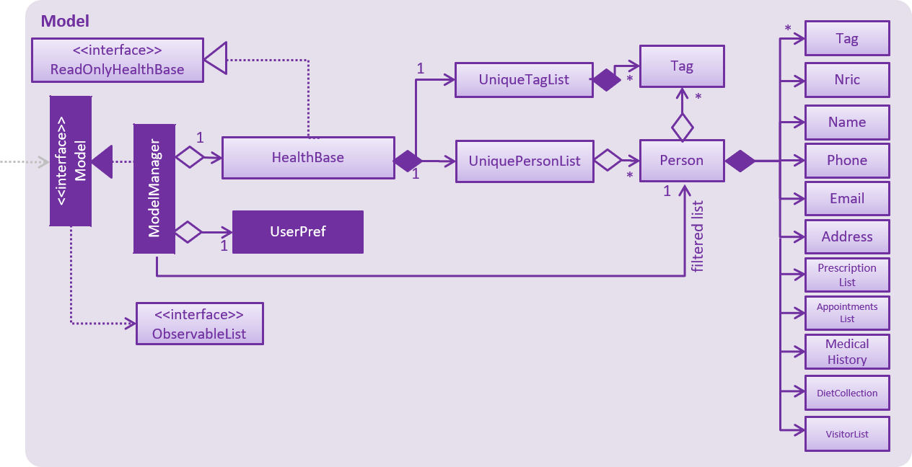

By: Team W14-3 Since: Sept 2018 Licence: MIT
1. Setting up
1.1. Prerequisites
-
JDK
9or laterJDK 10on Windows will fail to run tests in headless mode due to a JavaFX bug. Windows developers are highly recommended to use JDK9. -
IntelliJ IDE
IntelliJ by default has Gradle and JavaFx plugins installed.
Do not disable them. If you have disabled them, go toFile>Settings>Pluginsto re-enable them.
1.2. Setting up the project in your computer
-
Fork this repo, and clone the fork to your computer
-
Open IntelliJ (if you are not in the welcome screen, click
File>Close Projectto close the existing project dialog first) -
Set up the correct JDK version for Gradle
-
Click
Configure>Project Defaults>Project Structure -
Click
New…and find the directory of the JDK
-
-
Click
Import Project -
Locate the
build.gradlefile and select it. ClickOK -
Click
Open as Project -
Click
OKto accept the default settings -
Open a console and run the command
gradlew processResources(Mac/Linux:./gradlew processResources). It should finish with theBUILD SUCCESSFULmessage.
This will generate all resources required by the application and tests. -
Open
XmlAdaptedpatient.javaandMainWindow.javaand check for any code errors-
Due to an ongoing issue with some of the newer versions of IntelliJ, code errors may be detected even if the project can be built and run successfully
-
To resolve this, place your cursor over any of the code section highlighted in red. Press ALT+ENTER, and select
Add '--add-modules=…' to module compiler optionsfor each error
-
-
Repeat this for the test folder as well (e.g. check
XmlUtilTest.javaandHelpWindowTest.javafor code errors, and if so, resolve it the same way)
1.3. Verifying the setup
-
Run the
seedu.address.MainAppand try a few commands -
Run the tests to ensure they all pass.
1.4. Configurations to do before writing code
1.4.1. Configuring the coding style
This project follows oss-generic coding standards. IntelliJ’s default style is mostly compliant with ours but it uses a different import order from ours. To rectify,
-
Go to
File>Settings…(Windows/Linux), orIntelliJ IDEA>Preferences…(macOS) -
Select
Editor>Code Style>Java -
Click on the
Importstab to set the order-
For
Class count to use import with '*'andNames count to use static import with '*': Set to999to prevent IntelliJ from contracting the import statements -
For
Import Layout: The order isimport static all other imports,import java.*,import javax.*,import org.*,import com.*,import all other imports. Add a<blank line>between eachimport
-
Optionally, you can follow the UsingCheckstyle.adoc document to configure Intellij to check style-compliance as you write code.
1.4.2. Updating documentation to match your fork
After forking the repo, the documentation will still have the SE-EDU branding and refer to the se-edu/addressbook-level4 repo.
If you plan to develop this fork (separate product (i.e. instead of contributing to se-edu/addressbook-level4)) | you should do the following:
-
Configure the site-wide documentation settings in
build.gradle, such as thesite-name, to suit your own project. -
Replace the URL in the attribute
repoURLinDeveloperGuide.adocandUserGuide.adocwith the URL of your fork.
1.4.3. Setting up CI
Set up Travis to perform Continuous Integration (CI) for your fork. See UsingTravis.adoc to learn how to set it up.
After setting up Travis, you can optionally set up coverage reporting for your team fork (see UsingCoveralls.adoc).
| Coverage reporting could be useful for a team repository that hosts the final version but it is not that useful for your patiental fork. |
Optionally, you can set up AppVeyor (second CI (see UsingAppVeyor.html).
| Having both Travis and AppVeyor ensures your App works on both Unix-based platforms and Windows-based platforms (Travis is Unix-based and AppVeyor is Windows-based) |
1.4.4. Getting started with coding
When you are ready to start coding,
-
Get some sense of the overall design by reading Section 2.1, “Architecture”.
2. Design
2.1. Architecture

The Architecture Diagram given above explains the high-level design of the App. Given below is a quick overview of each component.
The .pptx files used to create diagrams in this document can be found in the diagrams folder. To update a diagram, modify the diagram in the pptx file, select the objects of the diagram, and choose Save as picture.
|
Main has only one class called MainApp. It is responsible for,
-
At app launch: Initializes the components in the correct sequence, and connects them up with each other.
-
At shut down: Shuts down the components and invokes cleanup method(s) where necessary.
Commons represents a collection of classes used by multiple other components. Two of those classes play important roles at the architecture level.
-
EventsCenter: This class (written using Google’s Event Bus library) is used by components to communicate with other components using events (i.e. a form of Event Driven design) -
LogsCenter: Used by many classes to write log messages to the App’s log file.
The rest of the App consists of four components.
Each of the four components
-
Defines its API in an
interfacewith the same name as the component. -
Exposes its functionality using a
{component Name}Managerclass.
For example, the Logic component (see the class diagram given below) defines it’s API in the Logic.java interface and exposes its functionality using the LogicManager.java class.
Events-driven nature of the design
The Sequence Diagram below shows how the components interact for the scenario where the user issues the command delete 1.
delete 1 command (part 1)
Note how the Model simply raises a AddressBookChangedEvent when the Address Book data are changed, instead of asking the Storage to save the updates to the hard disk.
|
The diagram below shows how the EventsCenter reacts to that event, which eventually results in the updates being saved to the hard disk and the status bar of the UI being updated to reflect the 'Last Updated' time.

delete 1 command (part 2)
Note how the event is propagated through the EventsCenter to the Storage and UI without Model having to be coupled to either of them. This is an example of how this Event Driven approach helps us reduce direct coupling between components.
|
The sections below give more details of each component.
2.2. UI component

API : Ui.java
The UI consists of a MainWindow that is made up of parts e.g.CommandBox, ResultDisplay, patientListPanel, StatusBarFooter, MedicationView, etc. All these, including the MainWindow, inherit from the abstract UiPart class.
The UI component uses the JavaFX UI framework. The layout of these UI parts are defined in matching .fxml files that are in the src/main/resources/view folder. For example, the layout of the MainWindow is specified in MainWindow.fxml
The UI component does the following:
-
Executes user commands using the
Logiccomponent -
Binds itself to some data in the
Modelso that the UI can auto-update when data in theModelchanges -
Responds to events raised from various parts of the App and updates the UI accordingly
2.3. Logic component
API :
Logic.java
-
Logicuses theAddressBookParserclass to parse the user command. -
This results in a
Commandobject which is executed by theLogicManager. -
The command execution can affect the
Model(e.g. adding a patient) and/or raise events. -
The result of the command execution is encapsulated as a
CommandResultobject which is passed back to theUI.
Given below is the Sequence Diagram for interactions within the Logic component for the execute("delete 1") API call.
delete 1 Command2.4. Model component
API : Model.java
The Model,
-
stores a
UserPrefobject that represents the user’s preferences. -
stores the Address Book data.
-
exposes an unmodifiable
ObservableList<patient>that can be 'observed' e.g. the UI can be bound to this list so that the UI automatically updates when the data in the list change. -
does not depend on any of the other three components.
As a more OOP model, we can store a Tag list in Address Book, which patient can reference. This would allow Address Book to only require one Tag object per unique Tag, instead of each patient needing their own Tag object. An example of how such a model may look like is given below. |
2.5. Storage component
API : Storage.java
The Storage component,
-
can save
UserPrefobjects in json format and read it back. -
can save the Address Book data in xml format and read it back.
2.6. Common classes
Classes used by multiple components are in the seedu.addressbook.commons package.
3. Implementation
This section describes some noteworthy details on how certain features are implemented.
3.1. Addappt
3.1.1. Current implementation
The addappt command provides functionality for users to add an appointment for a given patient.
This is done by adding appointment-related information to a given person, represented by a Person object.
This allows for users to track the upcoming appointments for every patient.
The adding of appointment-related information is facilitated by the following classes:
-
AppointmentsList, a list of-
Appointment, each of which have a-
Type
-
-
A more detailed description of the classes follows below:
-
AppointmentsList-
Every
Personhas anAppointmentsList, the purpose of which is to store allAppointmentbelonging to aPerson. -
A wrapper class around the internal representation of a list of appointments that exposes only a few select methods in the
ListAPI.-
The methods relevant to the
addapptcommand from the API are:add.
-
-
-
Appointment-
Class encapsulating all the information about a particular appointment.
-
These information include the type of appointment (enum Type), name of the procedure, date and time of the appointment and the name of the doctor-in-charge of the appointment
-
-
-
Type-
An enumeration that covers all the different types of medical procedures. The four types are:
-
PROPAEDEUTIC, withPROPas abbreviation -
DIAGNOSTIC, withDIAGas abbreviation -
THERAPEUTIC, withTHPas abbreviation -
SURGICAL, withSRGas abbreviation
-
-
Given below is an example usage scenario and how the relevant classes behave at each step. At the end of the explanation is a sequence diagram of a typical addappt command execution.
{kind=link}
The user executes addappt ic/S1234567A type/SRG pn/Heart Bypass dt/27-04-2019 1030 doc/Dr. Pepper.
This command has the following intent: Record the following appointment to a patient with NRIC = S1234567A:
| Appt. type | Procedure name | Date and time | Doctor-in-charge |
|---|---|---|---|
|
Heart Bypass |
27-04-2019 1030 |
Dr. Pepper |
The command is passed to an instance of the LogicManager class, which in turn executes AddressBookParser::parse.
The AddressBookParser parses the command word (addappt) and executes AddApptCommandParser::parse.
The AddApptCommandParser::parse method returns an AddApptCommand object which encapsulates the necessary information to update the Person 's appointments(s).
Control then passes back to the LogicManager, which calls AddApptCommand::execute.
If no/multiple patient(s) with that NRIC exist(s), then the AddApptCommand::execute method will throw a CommandException with the appropriate error message and the usage case will end.
|
The AddApptCommand::execute method constructs a new Person object using all the details of the old Person, with the sole difference being the AppointmentsList used being a deep copy of the original Person’s `AppointmentsList with the new Appointment added.
This updated Person object is used to update the existing Person object using the Model::updatePerson method (or an overridden version) of the backing model.
Finally, the AddApptCommand::execute method terminates, returning a CommandResult with a success message. The LogicManager then returns the same CommandResult as the return value of the LogicManager::execute method.
The command execution then ends.
The following sequence diagram shows the execution of the addappt command:

addappt command3.1.2. Design considerations
Aspect: Representation of types of medical procedures
-
Alternative 1 (Current implementation): Use an
EnumforType-
Pros: Makes for easier handling of incorrect values.
-
Cons: Requires more effort to filter and retrieve the different types.
-
-
Alternative 2: Have a switch case to handle the different types
-
Pros: Makes the process easier to handle.
-
Cons: Makes the code more difficult to read.
-
3.2. Adddiet
3.2.1. Current implementation
The adddiet command provides functionality for users to add dietary requirements for a given patient.
This command allows users to add three different types of dietary requirements: allergy, cultural requirement and physical difficulty.
This command adds these dietary requirements to a given Person , so that the dietary requirements can be viewed later on.
Classes involved
The adding of the dietary requirements involve the following classes:
-
DietCollection, which is a set of-
Diet, which consists of the detail of the requirement and its type-
DietType.
-
-
A more detailed description of the classes involved is as follows:
-
Diet Collection-
Every
Personobject has aDiet Collection, which is a collection of all the dietary requirements of the given patient. -
This class is a wrapper class around the internal representation of a
SetofDiets.
-
-
Diet-
This class encapsulate the information of a single dietary requirement.
-
Specifically, an instance of this class is composed of
-
a
Stringrepresenting the details of the requirement in text, and -
a
DietTyperepresenting the type of this dietary requirement (allergy, cultural requirement, or physical difficulty).
-
-
-
DietType-
This is a
Enumclass representing the three different types of dietary requirements. -
Implemented as
Enumclass to avoid typo and invalid types being entered.
-
Execution of the command
Given below is an usage scenario and the details when executing adddiet command.
For example, when the user executes adddiet ic/S1234567A alg/Egg alg/Crab cr/Halal pd/Hands cannot move.:
-
The command text is passed to an instance of the
Logic Managerclass. -
The
Logic Managerinstance callsAddressBookParser#parseCommand, which parses theadddietcommand word. -
Next, the
AddDietCommandParser#parsemethod parses the different dietary requirements into oneDietCollectionobject. An instance ofAddDietCommandis returned after the parsing. -
Logic Managerthen execute thisAddDietCommandby callingAddDietCommand#execute. -
In the
AddDietCommand#executemethod, the newDietCollectionobject is added to a new copy of thePersonobject. -
The new
Personobject is updated to the model byModel#updatePersonmethod. -
A new
CommandResultis returned and the execution ends.
Here is the sequence diagram of the typical execution of an adddiet command:

adddiet command3.2.2. Design considerations
Aspect: How to represent different kinds of dietary requirements
-
Alternative 1 (current implementation): Use a
Enuminside theDiet classand contain allDietin one collection.-
Pros: Results in less repetitive code and cleaner design.
-
Cons: Requires more effort to filter or retrieve different types of
Dietfrom oneDietCollection.
-
-
Alternative 2: Use polymorphism to extends
Dietclass and add three different collections to aPerson.-
Pros: Makes it easier to retrieve different types of dietary requirements.
-
Cons: Results in a lot of repetitive code since the three different types do not differ much.
-
Aspect: Data structure to hold the different Diet objects
-
Alternative 1 (current implementation): Use
HashSetand override thehashCodeforDiet.-
Pros: Makes it easier to handle duplication in adding dietary requirement.
-
Cons: Causes the order in which dietary requirements are added to be lost. (However, the sequence is not important for the current set of features implemented.)
-
-
Alternative 2: Use
ArrayList.-
Pros: Preserves the order in which dietary requirements are added.
-
Cons: Makes it harder to handle duplicates.
-
3.3. Addmeds
3.3.1. Current implementation
The addmeds command provides functionality for users to add prescription-related information for a given patient.
This is done by adding prescription-related information to a given person, represented by a Person object.
This allows for a patient to build up a history of prescriptions for viewing at a later date.
The adding of prescription-related information is facilitated by the following classes:
-
PrescriptionList, a list of-
Prescriptions, each of which have a-
Doseand a -
Duration.
-
-
A more detailed description of the classes follows below:
-
PrescriptionList-
Every
Personhas aPrescriptionList, the purpose of which is to store thePerson'sPrescriptions. -
A wrapper class around the internal representation of a list of prescriptions that exposes only a few select methods in its API.
-
The methods relevant for the
addmedscommand execution are:add
-
-
-
Prescription-
Class encapsulating all the information about a given medication prescription.
-
More specifically, the
Prescriptionclass encapsulates the name of the drug prescribed, the dosage information (itself stored as aDoseobject), and the duration of the prescription (as aDurationobject).
-
-
-
Dose-
Class encapsulating all the information about a given medication dosage.
-
More specifically, the
Doseclass encapsulates the dose, dosage unit, and doses per day to administer.
-
-
-
Duration-
Class encapsulating all the information about a given time period.
-
More specifically, the
Durationclass encapsulates the duration of the time period in milliseconds, and the calendar dates for the start and end of that time period.
-
-
Given below is an example usage scenario and how the relevant classes behave at each step.
At the end of the explanation is a sequence diagram of a typical addmeds command execution.
The user executes addmeds ic/S1234567A d/Paracetamol q/2 u/tablets n/4 t/14 .
This command has the following intent: Prescribe the following medication to a patient with NRIC = S1234567A:
Drug Name |
Dosage |
Duration |
Paracetamol |
2 tablets, 4 times a day |
14 days, from current date to 14 days from now. |
The command text is passed to an instance of the LogicManager class, which in turn executes AddressBookParser::parse.
The AddressBookParser parses the command word (addmeds) and executes AddmedsCommandParser::parse.
This causes the AddmedsCommandParser to construct the following objects in the following order:
Index |
Information used |
Class instances used |
Class instance constructed |
1 |
Dosage, Dosage unit, Doses per day |
nil |
|
2 |
Duration in days |
nil |
|
3 |
NRIC |
nil |
|
4 |
Drug name |
|
|
5 |
nil |
|
|
The AddmedsCommandParser::parse method returns an AddmedsCommand object which encapsulates the necessary information to update the Person 's medication(s).
Control then passes back to the LogicManager, which calls AddmedsCommand::execute.
The AddmedsCommand::execute method constructs a new Person object using all the details of the old Person, with the sole difference being the PrescriptionList used being a deep copy of the original Person 's PrescriptionList with the new Prescription added.
This updated Person object is used to update the existing Person object using the Model::updatePerson method (or an overridden version) of the backing model.
Finally, the AddmedsCommand::execute method terminates, returning a CommandResult with a success message.
The LogicManager then returns the same CommandResult as the return value of the LogicManager::execute method.
The command execution then ends.
The following sequence diagram shows the execution of the addmeds command:
addmeds command3.3.2. Design considerations
Aspect: Data structure to support the medication data storage
-
Alternative 1 (Current implementation): Store the data inside multiple POJO classes, with new classes being introduced as necessary to maintain high cohesion of individual classes. For example, the
Durationclass holds temporal information, whereas theDoseclass holds medication dosage-related information.-
Pros: Maintains the Single Responsibility Principle (e.g. the
Prescriptionclass now changes only if there are changes to the structure of a physical prescription, and not due to (e.g.) changes in time representation, or the way that dosage-related information is stored. -
Cons: Increases the number of classes we will have to maintain.
-
-
Alternative 2: Store all the data directly as members inside a single
Prescriptionclass.-
Pros: Reduces the number of classes we will have to maintain.
-
Cons: Reduces the cohesion of the
Prescriptionclass as it now handles multiple different items e.g. dosage-related information and duration-related information.
-
3.4. Addmh
3.4.1. Current implementation
The functionalities of the addmh command are interlinked: the former allows the user to record a diagnosis
into a patient’s medical history, while the latter permits the viewing of a patient’s past diagnoses as recorded in
medical history.
Each patient’s information is stored within the Person objects. The execution of the addmh command results in the retrieval of
a particular Person object, and the consequent updating of the patient’s MedicalHistory.
Stated below is an example usage scenario and an explanation of the interactions that occurs as a result of the code execution.
The user executes the following commands:
-
addmh ic/S9123124A mh/Hypertension, diagnosed “years ago”, well contracted with Metoponol
Intent
The purpose of the keyed addmh command line is to register and record a diagnosis under the registered patient with
the NRIC S9123124A.
3.4.2. Command execution
The sequence diagram below shows the execution of the given scenario:

addmh command-
addmh ic/S9123124A mh/Hypertension, diagnosed “years ago”, well contracted with Metoponol-
When the user-executed
addmhline is passed into an instance of the LogicManager class, the methodAddressBookParser::parseis executed.AddressBookParserthen parses the command wordaddmhand subsequently executesAddmhCommandParser::parse. -
Next, arguments prefixed by
ic/andmh/are parsed intoNRICandDiagnosisobjects to be used in theAddmhCommandconstructor. -
The instantiated
AddmhCommandwill be the medium through which thePersonwith theNRICS9123124A is updated.-
In the
AddmhCommand#executemethod, a newMedicalHistoryobject is added to a new copy of thePersonobject. -
The new
Personobject is updated by the model by theModel::updatePersonmethod. -
A new
CommandResultobject is returned.
-
-
-
Command execution ends.
3.5. Visitorin/Viewvisitors/Visitorout
3.5.1. Current implementation
There three commands related to manage patients' visitors.
The visitorin command allows user to add visitors into patient’s visitorList. Every patient will has his/her own VisitorList and
the maximum number of visitors for a patient is set to be 5 in order to provide patient’s a comfortable resting environment.
The viewvisitors command allows user to view a patient’s current visitors in his/her VisitorList. It displays all the visitors from the requested patient’s
visitorList in order of entry.
The visitorout command allows user to remove a visitor from patient’s VisitorList.
Classes associated
The three commands are executed mainly depends on the classes of VisitorList and Visitor. Each Person object contains a
VisitorList. The visitorin and visitorout commands are created to add/remove a Visitor in the required Person 's VisitorList.
The viewvisitors command display the Person 's VisitorList.
-
VisitorList, a list of-
Visitors
-
A more detailed description of the classes involved is as follows:
-
Visitor-
This class encapsulates the given name of the visitor.
-
Stringrepresent the visitor name.
-
-
VisitorList-
Using
Listtype of structure to store all theVisitors stored for a particular patient
-
3.5.2. Commands Execution
To illustrate how the three commands work, examples are given below.
-
visitorin ic/S1234567A v/Jane-
The command inputs are passed to an instance of the
LogicManagerclass. -
AddressBookParserparses the command word (visitorin) and executesVisitorInCommandParser::parse. -
VisitorInCommandParser::parseconstruct and aVisitor(Jane),Nric(S1234567A) of the patient provided by the user and then returnsVisitorinCommandobject. -
In
VisitorinCommand, newVisitorobject is created and added to a copy of the requiredPersonobject’sVisitorList-
The new
Personobject is updated to the model byModel#updatePersonmethod. -
A new CommandResult object is returned and the execution ends.
-
-
-
viewvisitor ic/S1234567A-
Similar to the
visitorincommand,ViewvisitorsCommandParser::parsethe required patient’s ic(S1234567A) and returns aViewvisitorsCommandobject -
ViewvisitorsCommandretrieves the person with the required patient’s ic and construct a copy of selected patient’s VisitorList for display-
A new CommandResult object is returned and the execution ends.
-
-
-
visitorout ic/S1234567A v/Jane-
Similar to the
visitorincommand,VisitoroutCommandParser::parseconstruct and aVisitor(Jane),Nric(S1234567A) of the patient provided by the user and then returnsVisitoroutCommandobject. -
In
VisitoroutCommand, newVisitorobject is created and removed from the copy of the requiredPersonobject’sVisitorList-
The new
Personobject is updated to the model byModel#updatePersonmethod. -
A new CommandResult object is returned and the execution ends.
-
-
Here are the three sequence diagrams below:

3.6. [Proposed] Data Encryption
{Explain here how the data encryption feature will be implemented}
3.7. Logging
We are using the java.util.logging package for logging. The LogsCenter class is used to manage the logging levels and logging destinations.
-
The logging level can be controlled using the
logLevelsetting in the configuration file (See Section 3.8, “Configuration”) -
The
Loggerfor a class can be obtained usingLogsCenter.getLogger(Class)which will log messages according to the specified logging level -
Currently, log messages are output through:
Consoleand to a.logfile.
Logging levels
-
SEVERE: Critical problem detected which may possibly cause the termination of the application -
WARNING: Can continue, but with caution -
INFO: Information showing the noteworthy actions by the App -
FINE: Details that is not usually noteworthy but may be useful in debugging e.g. print the actual list instead of just its size
3.8. Configuration
Certain properties of the application can be controlled (e.g app name, logging level) through the configuration file (default: config.json).
4. Documentation
We use AsciiDoc for writing documentation.
| We chose AsciiDoc over Markdown because AsciiDoc, although a bit more complex than Markdown, provides more flexibility in formatting. |
4.1. Editing documentation
See UsingGradle.adoc to learn how to render .adoc files locally to preview the end result of your edits.
Alternatively, you can download the AsciiDoc plugin for IntelliJ, which allows you to preview the changes you have made to your .adoc files in real-time.
4.2. Publishing documentation
See UsingTravis.adoc to learn how to deploy GitHub Pages using Travis.
4.3. Converting documentation to PDF format
We use Google Chrome for converting documentation to PDF format, as Chrome’s PDF engine preserves hyperlinks used in webpages.
Here are the steps to convert the project documentation files to PDF format.
-
Follow the instructions in UsingGradle.adoc to convert the AsciiDoc files in the
docs/directory to HTML format. -
Go to your generated HTML files in the
build/docsfolder, right click on them and selectOpen with→Google Chrome. -
Within Chrome, click on the
Printoption in Chrome’s menu. -
Set the destination to
Save as PDF, then clickSaveto save a copy of the file in PDF format. For best results, use the settings indicated in the screenshot below.

4.4. Site-wide documentation settings
The build.gradle file specifies some project-specific asciidoc attributes which affects how all documentation files within this project are rendered.
Attributes left unset in the build.gradle file will use their default value, if any.
|
| Attribute name | Description | Default value |
|---|---|---|
|
The name of the website. If set, the name will be displayed near the top of the page. |
not set |
|
URL to the site’s repository on GitHub. Setting this will add a "View on GitHub" link in the navigation bar. |
not set |
|
Define this attribute if the project is an official SE-EDU project. This will render the SE-EDU navigation bar at the top of the page, and add some SE-EDU-specific navigation items. |
not set |
4.5. Per-file documentation settings
Each .adoc file may also specify some file-specific asciidoc attributes which affects how the file is rendered.
Asciidoctor’s built-in attributes may be specified and used as well.
Attributes left unset in .adoc files will use their default value, if any.
|
| Attribute name | Description | Default value |
|---|---|---|
|
Site section that the document belongs to.
This will cause the associated item in the navigation bar to be highlighted.
One of: * Official SE-EDU projects only |
not set |
|
Set this attribute to remove the site navigation bar. |
not set |
4.6. Site template
The files in docs/stylesheets are the CSS stylesheets of the site.
You can modify them to change some properties of the site’s design.
The files in docs/templates controls the rendering of .adoc files into HTML5.
These template files are written in a mixture of Ruby and Slim.
|
Modifying the template files in |
5. Testing
5.1. Running tests
There are three ways to run tests.
| The most reliable way to run tests is the third one. The first two methods might fail some GUI tests due to platform/resolution-specific idiosyncrasies. |
Method 1: Using IntelliJ JUnit test runner
-
To run all tests, right-click on the
src/test/javafolder and chooseRun 'All Tests' -
To run a subset of tests, you can right-click on a test package, test class, or a test and choose
Run 'ABC'
Method 2: Using Gradle
-
Open a console and run the command
gradlew clean allTests(Mac/Linux:./gradlew clean allTests)
| See UsingGradle.adoc for more info on how to run tests using Gradle. |
Method 3: Using Gradle (headless)
Thanks to the TestFX library we use, our GUI tests can be run in the headless mode. In the headless mode, GUI tests do not show up on the screen. That means the developer can do other things on the Computer while the tests are running.
To run tests in headless mode, open a console and run the command gradlew clean headless allTests (Mac/Linux: ./gradlew clean headless allTests)
5.2. Types of tests
We have two types of tests:
-
GUI Tests - These are tests involving the GUI. They include,
-
System Tests that test the entire App by simulating user actions on the GUI. These are in the
systemtestspackage. -
Unit tests that test the individual components. These are in
seedu.address.uipackage.
-
-
Non-GUI Tests - These are tests not involving the GUI. They include,
-
Unit tests targeting the lowest level methods/classes.
e.g.seedu.address.commons.StringUtilTest -
Integration tests that are checking the integration of multiple code units (those code units are assumed to be working).
e.g.seedu.address.storage.StorageManagerTest -
Hybrids of unit and integration tests. These test are checking multiple code units as well as how the are connected together.
e.g.seedu.address.logic.LogicManagerTest
-
5.3. Troubleshooting testing
Problem: HelpWindowTest fails with a NullPointerException.
-
Reason: One of its dependencies,
HelpWindow.htmlinsrc/main/resources/docsis missing. -
Solution: Execute Gradle task
processResources.
6. Dev Ops
6.1. Build automation
See UsingGradle.adoc to learn how to use Gradle for build automation.
6.2. Continuous integration
We use Travis CI to perform Continuous Integration on our projects. See UsingTravis.adoc and UsingAppVeyor.adoc for more details.
6.3. Coverage reporting
We use Coveralls to track the code coverage of our projects. See UsingCoveralls.adoc for more details.
6.4. Documentation previews
When a pull request has changes to asciidoc files, you can use Netlify to see a preview of how the HTML version of those asciidoc files will look like when the pull request is merged. See UsingNetlify.adoc for more details.
6.5. Making a release
Here are the steps to create a new release.
-
Update the version number in
MainApp.java. -
Generate a JAR file using Gradle.
-
Tag the repo with the version number. e.g.
v0.1 -
Create a new release using GitHub and upload the JAR file you created.
6.6. Managing dependencies
A project often depends on third-party libraries. For example, HealthBase depends on the Jackson library for XML parsing. Managing these dependencies can be automated using Gradle. For example, Gradle can download the dependencies automatically, which is better than these alternatives.
a. Include those libraries in the repo (this bloats the repo size)
b. Require developers to download those libraries manually (this creates extra work for developers)
Appendix A: Product Scope
Target user profile:
-
has a need to manage a significant amount of medical data
-
prefer desktop apps over other types
-
can type fast
-
prefers typing over mouse input
-
is reasonably comfortable using CLI apps
Value proposition: manage patient data faster than a typical mouse/GUI driven app or pen/paper management systems.
Appendix B: User Stories
Priorities: High (must have) - * * *, Medium (nice to have) - * *, Low (unlikely to have) - *
| Priority | As a … | I want to … | So that I can… |
|---|---|---|---|
|
doctor |
view my patient’s medical history |
be aware of any chronic illnesses he has. |
|
doctor |
view my patient’s current medication |
avoid double-prescriptions. |
|
doctor |
search for a particular patient |
view his information. |
|
doctor |
view my patient’s medical history |
understand his medical situation better. |
|
doctor |
view my patient’s drug allergies |
prescribe him the correct medicine. |
|
doctor |
view my patient’s drug prescription history on a timeline |
have a better idea of the patient’s medication history. |
|
pharmacist |
view my patient’s current medication |
can avoid double-prescriptions. |
|
nurse |
view my patient’s dietary information |
know my patient’s dietary preference. |
|
nurse |
view a patient’s next-of-kin |
contact them in the event that the patient dies. |
|
nurse |
view a patient’s medical history |
can triage them effectively. |
|
counter staff |
view a patient’s registered visitors |
verify if a visitor is a valid visitor. |
|
counter staff |
view a patient’s registered visitors |
view the number of visitors for each patient at any one time |
{More to be added}
Appendix C: Use Cases
(For all use cases below, the System is the HealthBase and the Actor is the user, unless specified otherwise)
Use case: delete patients
MSS
-
User requests to list patients
-
HealthBase shows a list of patients
-
User requests to delete a specific patient in the list
-
HealthBase deletes the patient
Use case ends.
Extensions
-
2a. The list is empty.
Use case ends.
-
3a. The given index is invalid.
-
3a1. HealthBase shows an error message.
Use case resumes at step 2.
-
Use case: View patient’s medical details
MSS
-
Doctor requests to list patient’s medical details
-
HealthBase shows a list of the patient’s medical details
Use case ends.
Extensions
-
2a. The patient does not exist.
-
2a1. HealthBase shows an error message.
Use case ends.
-
Use case: View patient’s medication
MSS
-
Doctor/Pharmacist requests to list patient’s current medication
-
HealthBase shows a list of the patient’s current medication
Use case ends.
Extensions
-
2a. The patient does not exist.
-
2a1. HealthBase shows an error message.
Use case ends.
-
Use case: View patient’s dietary details
MSS
-
User searches the name of a patient
-
HealthBase shows a list of patients
-
User requests to view a patient’s dietary details
-
HealthBase shows requested details
Use case ends.
Extensions
-
2a. The list is empty.
Use case ends.
-
3a. The given index is invalid.
-
3a1. HealthBase shows an error message.
Use case ends.
-
Use case: Sign in patient’s visitors
MSS
-
Counter staff inputs the visited patient’s number
-
HealthBase displays the number of visitors the patiently currently has
-
Visitor is registered
Use case ends.
Extensions
-
2a. Number of visitors for that patient exceeds maximum number allowed.
-
2a1. HealthBase rejects visitor.
Use case ends.
-
Use case: Sign out patient’s visitors
MSS
-
Counter staff inputs the visited patient’s number and visitor name
-
Visitor is signed out
Use case ends
Extensions
-
1a. Counter staff inputs the visited patient’s number and visitor name.
-
2a. Visitor is signed out.
Use case ends.
Use case: Register patient
MSS
-
Counter nurse request to register a new patient
-
Counter nurse inputs the patient’s NRIC
-
HealthBase adds the patient into the patient queue
Use case ends
Extensions
-
1a. The patient is already checked in.
-
1a1. HealthBase shows an error message.
Use case resumes at step 2.
-
-
2a. The patient has no existing data.
-
2a1. HealthBase prompts for additional data.
User case resumes at step 2.
-
3a1. HealthBase shows an error message.
Use case resumes at step 2.
-
Use case: Checkout patient
MSS
-
Counter nurse request to checkout patient
-
Counter nurse inputs the details for the patient to be checked out.
-
User requests to delete a specific person in the list
-
HealthBase removes the patient from patient queue
Use case ends.
Extensions
-
2a. The list is empty.
Use case ends.
-
3a. The given index is invalid.
-
3a1. HealthBase shows an error message.
Use case resumes at step 2.
-
Appendix D: Non Functional Requirements
-
Should work on any mainstream OS as long as it has Java
9or higher installed. -
Should be able to hold up to 1000 patients without a noticeable sluggishness in performance for typical usage.
-
A user with above average typing speed for regular English text (i.e. not code, not system admin commands) should be able to accomplish most of the tasks faster using commands than using the mouse.
-
Should work on Windows 10 and above as long as it has Java 9 or higher installed.
-
Should be able to hold up to 1000 patients without a noticeable sluggishness in performance for typical usage.
-
A user with above average typing speed for regular English text (i.e. not code, not system admin commands) should be able to accomplish most of the tasks faster using commands than using the mouse.
-
Patient data should be securely encrypted.
-
Patients information will be safely backed up every week.
{More to be added}
Appendix E: Glossary
- Mainstream OS
-
Windows, Linux, Unix, OS-X
- Private contact detail
-
A contact detail that is not meant to be shared with others
- Patient’s medical details
-
Information about the patient’s medical history and drug allergies
- Medical history
-
Past records of healthcare visits, pre-existing medical conditions
- Authorised visitors
-
Upon check-in of patient, the information of permitted visitors entered
- Register
-
Patient registers at the hospital
- Checkout
-
Patient is discharged from the hospital
Appendix F: Instructions for Manual Testing
Given below are instructions to test the app manually.
| These instructions only provide a starting point for testers to work on; testers are expected to do more exploratory testing. |
F.1. Launch and shutdown
-
Initial launch
-
Download the jar file and copy into an empty folder
-
Double-click the jar file
Expected: Shows the GUI with a set of sample contacts. The window size may not be optimum.
-
-
Saving window preferences
-
Resize the window to an optimum size. Move the window to a different location. Close the window.
-
Re-launch the app by double-clicking the jar file.
Expected: The most recent window size and location is retained.
-
{ more test cases … }
F.2. Generating test data
-
Generating patients with mock data
-
Open the application.
-
Run the following commands in the following sequence:
-
dev-mode(Enables developer mode; the next command requires developer mode to run.) -
gendata NUMBER_OF_PATIENTS, whereNUMBER_OF_PATIENTSis a positive integer value that indicates how many patients you wish to generate.
-
-
The application will then generate that number of patients with mock data for their:
-
Personal particulars
-
NRIC
-
Name
-
Phone number
-
Email address
-
Physical address
-
-
Drug allergies
-
Medications
-
Appointments
-
Dietary restrictions
-
Medical history
Details on the exact range of values that the mock data can take on can be found in the related .java files.
F.3. Deleting a patient
-
Deleting a patient while all patients are listed
-
Prerequisites: List all patients using the
listcommand. Multiple patients in the list. -
Test case:
delete 1
Expected: First contact is deleted from the list. Details of the deleted contact shown in the status message. Timestamp in the status bar is updated. -
Test case:
delete 0
Expected: No patient is deleted. Error details shown in the status message. Status bar remains the same. -
Other incorrect delete commands to try:
delete,delete x(where x is larger than the list size) {give more}
Expected: Similar to previous.
-
{ more test cases … }
F.4. Saving data
-
Dealing with missing/corrupted data files
-
{explain how to simulate a missing/corrupted file and the expected behavior}
-
{ more test cases … }